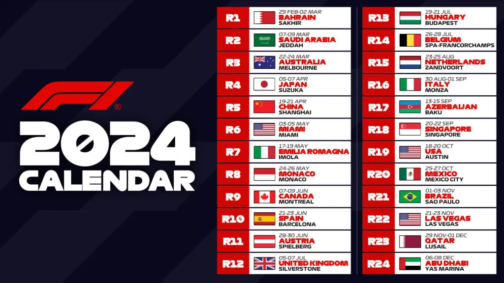

Formula 1
Formula 1 is the highest class of international racing for open-wheel single-seater formula racing cars sanctioned by the Fédération Internationale de l'Automobile (FIA). The World Drivers' Championship, which became the FIA Formula One World Championship in 1981, has been one of the premier forms of racing around the world since its inaugural season in 1950. The word formula in the name refers to the set of rules to which all participants' cars must conform. A Formula One season consists of a series of races, known as Grands Prix, which take place worldwide on both purpose-built circuits and closed public roads.
Історія Формули 1 – це захоплюючий шлях технологічних інновацій, неймовірних змагань та героїчних перемог. Все почалося в середині 20-го ....

Команди Формули 1 — елітні гоночні колективи, змагаючись за перемоги. Mercedes, Ferrari, Red Bull - лідери, що вкладають мільйони у розробку та інновації. Гонщики, такі як Lewis Hamilton та Max Verstappen, ведуть свої команди до захоплюючих змагань на найпрестижніших трасах світу.

Гонщики Формули 1 — еліта автоспорту, що втілюють силу, витонченість та вміння. Lewis Hamilton, семиразовий чемпіон, здивовує швидкістю та активною ролью в екологічних ініціативах. Max Verstappen, юний талант, представляє Red Bull Racing, вражаючи агресивним стилем гоніння. Charles Leclerc, від Ferrari, вражає точністю та винахідливістю. Гонщики, такі як Fernando Alonso, Sebastian Vettel та Valtteri Bottas, додають характеру та конкуренції. Кожен із них виражає унікальний стиль, що робить Формулу 1 сценою найвидатніших талантів гоночного світу.
У 2024 році Формула 1 продовжує захоплювати глядачів своїми заїздами на визначальних трасах. Тісна боротьба між командами Mercedes, Ferrari та Red Bull створює напружену атмосферу.